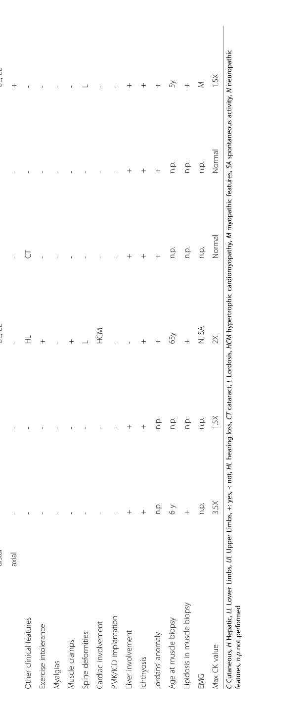

1. Disease Information
1.1 Definition and current understanding
NLSDI/CDS is a non-lysosomal neutral lipid storage disease characterized by systemic triacylglycerol (TAG) accumulation in cytoplasmic lipid droplets across tissues, with congenital ichthyosis as a defining feature when ABHD5 is the causal gene. (schweiger2009neutrallipidstorage pages 1-2, missaglia2019neutrallipidstorage pages 3-6)
A widely used disease identifier is OMIM: 275630 for NLSDI. (oji2017s1guidelinesfor pages 5-6, missaglia2019neutrallipidstorage pages 3-6)
Abstract-supported definition (direct quote): A 2019 review states: “Neutral lipid storage disease with myopathy (NLSDM) and with ichthyosis (NLSDI) are rare autosomal recessive disorders caused by mutations in the PNPLA2 and in the ABHD5/CGI58 genes, respectively.” (missaglia2019neutrallipidstorage pages 3-6)
1.2 Key identifiers (available from retrieved evidence)
- OMIM: 275630 (NLSDI) (oji2017s1guidelinesfor pages 5-6, missaglia2019neutrallipidstorage pages 3-6)
Not found in retrieved evidence: MONDO ID, Orphanet identifier, ICD-10/ICD-11 codes, and MeSH descriptor were not present in the provided full-text evidence and therefore cannot be asserted here.
1.3 Synonyms / alternative names
- Neutral lipid storage disease with ichthyosis (NLSDI) (oji2017s1guidelinesfor pages 5-6, missaglia2019neutrallipidstorage pages 3-6)
- Chanarin–Dorfman syndrome / Chanarin Dorfman syndrome (CDS) (missaglia2019neutrallipidstorage pages 3-6, schweiger2009neutrallipidstorage pages 1-2)
- “Triglyceride storage disease type 1” is referenced as a label used in ichthyosis classification contexts, but an explicit mapping statement to NLSDI was not captured in the extracted guideline text and is therefore only noted as a commonly used synonym in the literature surrounding the disease entity. (oji2017s1guidelinesfor pages 5-6)
1.4 Evidence source type
The characterization in this report is derived from aggregated disease-level resources (reviews, cohorts, guidelines) and individual patient-level reports (case reports/series), with mechanistic insights from cell/biochemical studies. (pennisi2017neutrallipidstorage pages 1-2, missaglia2019neutrallipidstorage pages 3-6, kien2018abhd5stimulatespnpla1mediated pages 1-3, mangukiya2023chanarindorfmansyndrome(cds) pages 5-6)
2. Etiology
2.1 Disease causal factors
- Genetic cause: biallelic pathogenic variants in ABHD5 (aka CGI-58) cause NLSDI/CDS. (oji2017s1guidelinesfor pages 5-6, missaglia2019neutrallipidstorage pages 3-6)
- Mechanistic cause (core defect): loss of ABHD5 cofactor function impairs TAG hydrolysis/mobilization at lipid droplets, promoting intracellular lipid droplet accumulation. (schweiger2009neutrallipidstorage pages 1-2, missaglia2019neutrallipidstorage pages 3-6)
2.2 Risk factors
- Genetic: autosomal recessive inheritance implies risk is increased by consanguinity and founder mutations in some populations (reported series with shared founder variants). (tavian2021recurrentn209abhd5 pages 6-7, tavian2021recurrentn209abhd5 pages 4-6)
No environmental/infectious risk factors were identified in the extracted evidence.
2.3 Protective factors / gene–environment interactions
No protective alleles or gene–environment interactions were identified in the retrieved evidence.
3. Phenotypes
3.1 Core phenotypic spectrum (human)
From aggregated and case-synthesis sources: - Skin: congenital ichthyosis / non-bullous congenital ichthyosiform erythroderma (NCIE) is a constant feature. (missaglia2019neutrallipidstorage pages 3-6, elsayed2023anovelabhd5 pages 1-3) - Liver: hepatomegaly, hepatic steatosis; fibrosis/cirrhosis may develop. Liver involvement is common (>80% in a 2019 synthesis). (missaglia2019neutrallipidstorage pages 3-6) - Muscle: myopathy occurs in a subset (~40% in a 2019 synthesis; later onset often reported). (missaglia2019neutrallipidstorage pages 3-6) - Hearing: sensorineural hearing loss (~30% in a 2019 synthesis). (missaglia2019neutrallipidstorage pages 3-6) - Other reported involvement: ocular (ectropion/cataract), CNS/neurodevelopmental features, and less commonly kidney involvement in certain series/cases. (mangukiya2023chanarindorfmansyndrome(cds) pages 5-6, elsayed2023anovelabhd5 pages 1-3)
A 2023 review-style case synthesis reported approximate feature frequencies: hepatomegaly 60%, myopathy 59%, ectropion 29%, cataract 22%, deafness 17%, splenomegaly 13%. (mangukiya2023chanarindorfmansyndrome(cds) pages 5-6)
3.2 Age of onset, severity, progression
- Skin disease is congenital/early onset. (elsayed2023anovelabhd5 pages 1-3)
- Myopathy can present later (often in adulthood in reviewed series). (missaglia2019neutrallipidstorage pages 3-6)
- Clinical expression is heterogeneous even within siblings, suggesting modifiers (genetic/epigenetic) contribute to severity. (elsayed2023anovelabhd5 pages 1-3, pennisi2017neutrallipidstorage pages 1-2)
3.3 Quality-of-life impact
No disease-specific quality-of-life instrument data were identified in the retrieved evidence; however, congenital ichthyosis and multisystem organ involvement are expected to impact daily functioning.
3.4 Suggested HPO terms (examples; not exhaustive)
- Ichthyosis: HP:0008064
- Erythroderma: HP:0000963
- Hepatomegaly: HP:0002240
- Hepatic steatosis: HP:0001397
- Cirrhosis: HP:0001394
- Myopathy: HP:0003198
- Elevated creatine kinase: HP:0003236
- Sensorineural hearing impairment: HP:0000407
- Cataract: HP:0000518
- Splenomegaly: HP:0001744
- Nephrotic syndrome (reported in rare renal involvement): HP:0000100 (mangukiya2023chanarindorfmansyndrome(cds) pages 5-6)
4. Genetic / Molecular Information
4.1 Causal gene(s)
- ABHD5 (CGI-58) is the causal gene for NLSDI/CDS (OMIM 275630). (oji2017s1guidelinesfor pages 5-6, missaglia2019neutrallipidstorage pages 3-6)
4.2 Pathogenic variant spectrum (high-level)
- ABHD5 variants in NLSDI are frequently truncating (nonsense/frameshift/splice); one synthesis reported ~80% truncating classes. (missaglia2019neutrallipidstorage pages 3-6)
- A 2023 report described a novel homozygous frameshift: ABHD5 c.553delTTGGGGTTTCCCT → p.W179Nfs22*, and cited literature aggregation emphasizing many truncating variants and pronounced phenotypic heterogeneity. (elsayed2023anovelabhd5 pages 1-3)
Variant origin: germline (implied by Mendelian AR inheritance and homozygous/compound heterozygous reports). (elsayed2023anovelabhd5 pages 1-3, missaglia2019neutrallipidstorage pages 3-6)
4.3 Modifier genes / epigenetics
A natural history cohort analysis suggested that “additional genetic or epigenetic factors” may modify expression, but specific modifier genes were not identified in the extracted text. (pennisi2017neutrallipidstorage pages 1-2)
5. Environmental Information
No specific toxins, lifestyle factors, or infectious triggers were identified in the retrieved evidence as causal or modifying factors for TGSD1/NLSDI.
6. Mechanism / Pathophysiology
6.1 Causal chain (conceptual)
ABHD5 loss-of-function → defective lipid droplet lipolysis and altered lipid trafficking → systemic TAG accumulation in multiple tissues (hepatocytes, leukocytes, myocytes, etc.) + epidermal barrier lipid deficiency → congenital ichthyosis and progressive/variable multisystem manifestations (liver disease, myopathy, etc.). (schweiger2009neutrallipidstorage pages 1-2, missaglia2019neutrallipidstorage pages 3-6, kien2018abhd5stimulatespnpla1mediated pages 1-3)
6.2 Lipid droplet and TAG mobilization biology
ABHD5 is a key cofactor in intracellular lipolysis pathways. Defects in ABHD5 impair ATGL-mediated TAG hydrolysis, promoting lipid droplet accumulation in many cell types. (schweiger2009neutrallipidstorage pages 1-2, missaglia2019neutrallipidstorage pages 3-6)
6.3 Skin barrier mechanism: ω-O-acylceramide pathway (key mechanistic advance)
Mechanistic studies established that ABHD5 contributes to the epidermal barrier through a pathway distinct from pure ATGL activation: - ABHD5 stimulates PNPLA1-mediated ω-O-acylceramide biosynthesis, critical for stratum corneum barrier function. (kien2018abhd5stimulatespnpla1mediated pages 1-3) - ABHD5 enhances PNPLA1-dependent acylceramide production and helps recruit PNPLA1 to lipid droplet-associated substrate pools; ABHD5’s PNPLA1-related function provides a mechanistic explanation for ichthyosis in ABHD5 deficiency. (ohno2018molecularmechanismof pages 1-6, kien2018abhd5stimulatespnpla1mediated pages 1-3)
6.4 Suggested ontology terms
GO biological processes (examples): - triglyceride catabolic process (GO:0019433) - lipid droplet organization (GO:0034389) - skin development / epidermis development (GO:0043588) - ceramide metabolic process (GO:0006672)
Cell types (CL examples): - keratinocyte (CL:0000312) - hepatocyte (CL:0000182) - neutrophil (CL:0000775) / leukocyte (CL:0000738) - skeletal muscle cell / myocyte (CL:0000197)
7. Anatomical Structures Affected
7.1 Organ-level involvement (supported by human literature)
- Skin/epidermis: ichthyosis/erythroderma (missaglia2019neutrallipidstorage pages 3-6)
- Liver: steatosis, hepatomegaly, fibrosis/cirrhosis; severe outcomes include hepatic failure and transplantation in end-stage cases (pennisi2017neutrallipidstorage pages 1-2, mangukiya2023chanarindorfmansyndrome(cds) pages 5-6)
- Skeletal muscle: myopathy in a subset (missaglia2019neutrallipidstorage pages 3-6)
- Blood leukocytes: lipid inclusions (diagnostic hallmark) (pennisi2017neutrallipidstorage pages 1-2, mangukiya2023chanarindorfmansyndrome(cds) pages 5-6)
UBERON suggestions (examples): - skin of body (UBERON:0002097) - liver (UBERON:0002107) - skeletal muscle tissue (UBERON:0001134) - peripheral blood (UBERON:0000178)
7.2 Subcellular localization
- Cytoplasmic lipid droplets are key affected organelles across cell types. (missaglia2019neutrallipidstorage pages 3-6, ohno2018molecularmechanismof pages 1-6)
8. Temporal Development (Natural History)
8.1 Natural history statistics (cohort data)
An Italian cohort study of NLSD (including NLSDI) reported follow-up 2–44 years (median 17.8 years) with major long-term outcomes: 2/21 (9.5%) deaths due to hepatic failure (both NLSDI) and 5/21 (24%) losing independent ambulation after a mean of 30.6 years. (pennisi2017neutrallipidstorage pages 1-2)
8.2 Course pattern
Course is variable with heterogeneous severity and organ involvement, including within families. (elsayed2023anovelabhd5 pages 1-3, pennisi2017neutrallipidstorage pages 1-2)
9. Inheritance and Population
9.1 Inheritance
- Autosomal recessive (AR). (oji2017s1guidelinesfor pages 5-6, missaglia2019neutrallipidstorage pages 3-6)
9.2 Epidemiology (case counts; no population prevalence/incidence found)
Robust prevalence/incidence estimates were not identified in the retrieved evidence. Available quantitative statements include: - A 2019 synthesis reported 129 NLSDI patients in the literature, 85 genetically confirmed. (missaglia2019neutrallipidstorage pages 3-6) - A 2021 review cited 151 reported CDS patients globally. (tavian2021recurrentn209*abhd5 pages 4-6)
9.3 Population clustering / founder effects
Founder-mutation clustering has been described (e.g., “largest series of patients carrying the same founder mutation in ABHD5 gene” referenced in the ABHD5-focused literature), consistent with geographically enriched variants in some populations. (tavian2021recurrentn209*abhd5 pages 6-7)
10. Diagnostics
10.1 Key diagnostic findings and real-world implementation
- Peripheral blood smear: Jordans’ anomaly (lipid-containing vacuoles/droplets in leukocytes) is repeatedly emphasized as a hallmark finding and part of diagnostic criteria in cohort studies. (pennisi2017neutrallipidstorage pages 1-2, mangukiya2023chanarindorfmansyndrome(cds) pages 5-6)
- Genetic testing: sequencing of ABHD5 is central for confirmation (and large deletions/promoter rearrangements may require methods beyond standard exon sequencing). (schratter2022abhd5—aregulatorof pages 17-19)
- Liver evaluation: imaging/biochemistry for steatosis and fibrosis staging (e.g., elastography) is used in clinical reports. (elsayed2023anovelabhd5 pages 1-3)
A 2024 report highlights diagnostic specificity limitations: lipid-laden leukocytes can be observed in congenital ichthyosis without classical ABHD5 mutations, implying that smear findings should trigger confirmatory molecular workup rather than serve as a standalone diagnostic test. (mangukiya2023chanarindorfmansyndrome(cds) pages 5-6)
10.2 Differential diagnosis (examples)
- NLSD with myopathy (NLSDM) due to PNPLA2 (ATGL) variants (distinguished by absence of ichthyosis and more prominent myopathy/cardiac involvement patterns). (schweiger2009neutrallipidstorage pages 1-2)
- Other syndromic ichthyoses and lipid storage disorders with liver disease.
10.3 Visual evidence (tables)
Pennisi et al. provide structured cohort tables of NLSD-I/NLSD-M clinical features and outcomes (Tables 1–2). (pennisi2017neutrallipidstorage media 60c6d88a, pennisi2017neutrallipidstorage media 44c0a5b2)
11. Outcome / Prognosis
Prognosis is mainly driven by hepatic disease severity and (for some individuals) progression of neuromuscular impairment. In the Italian cohort, hepatic failure accounted for reported deaths (NLSDI subgroup). (pennisi2017neutrallipidstorage pages 1-2)
Real-world end-stage outcomes include liver transplantation for uncompensated cirrhosis in CDS. (mangukiya2023chanarindorfmansyndrome(cds) pages 5-6)
12. Treatment
12.1 Current management (supportive; evidence mainly from case reports/series)
No disease-modifying therapy is established in the retrieved evidence; management is supportive and organ-directed.
Metabolic/liver-oriented dietary strategies - Low long-chain fat / low-triglyceride diet with medium-chain triglyceride (MCT) supplementation is repeatedly described; rationale is improved mitochondrial handling of medium-chain fatty acids. (tavian2021recurrentn209*abhd5 pages 4-6, mangukiya2023chanarindorfmansyndrome(cds) pages 5-6)
Adjunctive medications reported in case literature - Vitamin E (e.g., 10 mg/kg/day) and ursodeoxycholic acid (e.g., 15–20 mg/kg/day) are described in a 2023 case-review context, together with anecdotal improvements (including reduction in liver size and disappearance of leukocyte lipid inclusions in a reported case). (mangukiya2023chanarindorfmansyndrome(cds) pages 5-6)
Dermatologic treatment - Acitretin has case-level evidence for improvement of ichthyosis, including improvement after ~3 months in a case series context. (tavian2021recurrentn209*abhd5 pages 4-6)
Advanced interventions - Liver transplantation has been reported for end-stage liver disease due to CDS. (mangukiya2023chanarindorfmansyndrome(cds) pages 5-6)
12.2 Experimental therapeutics / trials
No NLSDI/CDS-specific interventional trial evidence was identified in the retrieved clinical trial records. An observational registry for NLSD/TGCV-related diseases is recruiting (NCT02918032; target enrollment 120). (mangukiya2023chanarindorfmansyndrome(cds) pages 5-6)
12.3 Suggested MAXO terms (examples)
- dietary fat modification / low-fat diet: MAXO term for dietary management (general dietary intervention)
- medium-chain triglyceride supplementation
- systemic retinoid therapy (acitretin)
- ursodeoxycholic acid therapy
- liver transplantation
13. Prevention
Primary prevention is not established beyond genetic risk mitigation: - Genetic counseling for autosomal recessive inheritance and at-risk families is implied by the inheritance pattern and recurrent/founder variants. (oji2017s1guidelinesfor pages 5-6, tavian2021recurrentn209*abhd5 pages 6-7)
No newborn screening approach was identified in the retrieved evidence.
14. Other Species / Natural Disease
No naturally occurring non-human disease analogs for ABHD5-associated NLSDI were identified in the retrieved evidence (distinct from PNPLA1-related ichthyosis in dogs/humans, which is a different gene/disease). (mangukiya2023chanarindorfmansyndrome(cds) pages 5-6)
15. Model Organisms
The retrieved evidence includes mechanistic work demonstrating ABHD5–PNPLA1 function in acylceramide biosynthesis and lipid droplet biology, but explicit named animal model descriptions for ABHD5-deficient NLSDI were not extracted in the provided evidence snippets. (kien2018abhd5stimulatespnpla1mediated pages 1-3, ohno2018molecularmechanismof pages 1-6)
2023–2024 highlights (recent developments)
- Novel ABHD5 variant report (2023): severe and heterogeneous phenotypes in siblings with a novel homozygous frameshift variant, supporting intrafamilial variability and a high proportion of truncating alleles in published cases. (elsayed2023anovelabhd5 pages 1-3)
- Expanded organ involvement (2023): adult case report describing renal involvement, emphasizing multisystem monitoring. (mangukiya2023chanarindorfmansyndrome(cds) pages 5-6)
- Advanced clinical management (2024): liver transplantation outcome report for end-stage cirrhosis due to CDS, demonstrating real-world implementation of transplant as a rescue therapy. (mangukiya2023chanarindorfmansyndrome(cds) pages 5-6)
- Diagnostic nuance (2024): leukocyte lipid inclusions can occur without classical ABHD5 mutations in congenital ichthyosis, reinforcing the need for genetic confirmation. (mangukiya2023chanarindorfmansyndrome(cds) pages 5-6)
Summary table (curated from evidence)
Table (click to expand)
| Category | Specific items | Evidence type | Year | URL/DOI | Citation IDs |
|---|---|---|---|---|---|
| Identifier | Neutral lipid storage disease with ichthyosis (NLSDI), OMIM #275630; listed as autosomal recessive syndromic ichthyosis associated with ABHD5 | Review/guideline | 2017, 2019 | https://doi.org/10.1111/ddg.13340; https://doi.org/10.3390/cells8020187 | (oji2017s1guidelinesfor pages 5-6, missaglia2019neutrallipidstorage pages 3-6) |
| Synonym | Chanarin–Dorfman syndrome (CDS); historical name for NLSDI; also referred to as triglyceride storage disease type 1 in ichthyosis classification resources | Review/case | 2009, 2019, 2021, 2023 | https://doi.org/10.1152/ajpendo.00099.2009; https://doi.org/10.3390/cells8020187; https://doi.org/10.4081/ejtm.2021.9796; https://doi.org/10.7759/cureus.43889 | (schweiger2009neutrallipidstorage pages 1-2, missaglia2019neutrallipidstorage pages 3-6, tavian2021recurrentn209*abhd5 pages 4-6, mangukiya2023chanarindorfmansyndrome(cds) pages 1-2) |
| Gene | Causal gene: ABHD5/CGI-58; encoded protein is a cofactor for adipose triglyceride lipase and has skin-barrier functions independent of ATGL | Review/mechanistic | 2009, 2018, 2019, 2022 | https://doi.org/10.1152/ajpendo.00099.2009; https://doi.org/10.1194/jlr.m089771; https://doi.org/10.3390/cells8020187; https://doi.org/10.3390/metabo12111015 | (schweiger2009neutrallipidstorage pages 1-2, kien2018abhd5stimulatespnpla1mediated pages 1-3, missaglia2019neutrallipidstorage pages 3-6, schratter2022abhd5—aregulatorof pages 17-19) |
| Inheritance | Autosomal recessive Mendelian disorder; frequent consanguinity/founder clustering reported in Mediterranean, Turkish, Tunisian, and Pakistani families | Review/cohort/case series | 2018, 2019, 2021, 2023 | https://doi.org/10.1186/s12881-018-0610-0; https://doi.org/10.1186/s13023-019-1095-4; https://doi.org/10.1186/s43042-021-00189-2; https://doi.org/10.7759/cureus.43889 | (elsayed2023anovelabhd5 pages 1-3, mangukiya2023chanarindorfmansyndrome(cds) pages 1-2) |
| Core pathophysiology | Defective ABHD5 impairs activation of ATGL and neutral lipid mobilization, causing systemic triacylglycerol accumulation in lipid droplets across leukocytes, liver, muscle, skin, and other tissues | Review/mechanistic | 2009, 2019, 2022, 2023 | https://doi.org/10.1152/ajpendo.00099.2009; https://doi.org/10.3390/cells8020187; https://doi.org/10.3390/metabo12111015; https://doi.org/10.7759/cureus.43889 | (schweiger2009neutrallipidstorage pages 1-2, missaglia2019neutrallipidstorage pages 3-6, schratter2022abhd5—aregulatorof pages 17-19, mangukiya2023chanarindorfmansyndrome(cds) pages 1-2) |
| Core pathophysiology | Skin-barrier mechanism: ABHD5 stimulates PNPLA1-mediated ω-O-acylceramide (acylceramide) biosynthesis, recruits PNPLA1 to lipid droplets, and loss of this pathway explains ichthyosis despite distinct ATGL-related phenotypes | Mechanistic | 2018 | https://doi.org/10.1016/j.jdermsci.2018.11.005; https://doi.org/10.1194/jlr.m089771 | (ohno2018molecularmechanismof pages 1-6, kien2018abhd5stimulatespnpla1mediated pages 1-3) |
| Key diagnostic hallmark | Jordans’ anomaly: lipid-containing vacuoles/droplets in peripheral blood leukocytes on smear; widely described as a pathognomonic or hallmark finding | Cohort/review/case | 2009, 2017, 2020, 2023 | https://doi.org/10.1152/ajpendo.00099.2009; https://doi.org/10.1186/s13023-017-0646-9; https://doi.org/10.4274/tjh.galenos.2020.2020.0242; https://doi.org/10.7759/cureus.43889 | (schweiger2009neutrallipidstorage pages 1-2, pennisi2017neutrallipidstorage pages 1-2, mangukiya2023chanarindorfmansyndrome(cds) pages 5-6) |
| Clinical features & frequencies | Ichthyosis is constant/universal; liver involvement >80%; sensorineural hearing loss ~30%; myopathy ~40%, often later onset; cardiomyopathy generally not typical for NLSDI | Review | 2019 | https://doi.org/10.3390/cells8020187 | (missaglia2019neutrallipidstorage pages 3-6) |
| Clinical features & frequencies | Reported frequencies in a 2023 case-review synthesis: hepatomegaly 60%, myopathy 59%, ectropion 29%, cataract 22%, deafness 17%, splenomegaly 13% | Case-review synthesis | 2023 | https://doi.org/10.7759/cureus.43889 | (mangukiya2023chanarindorfmansyndrome(cds) pages 5-6) |
| Clinical features & frequencies | Additional organ involvement reported: liver steatosis/fibrosis/cirrhosis, eyes (cataract, ectropion), ears, CNS, kidney, thyroid; severity is highly variable even within families | Cohort/case series | 2010, 2019, 2023 | https://doi.org/10.1186/1750-1172-5-33; https://doi.org/10.1186/s13023-019-1095-4; https://doi.org/10.1016/j.gendis.2022.08.005 | (elsayed2023anovelabhd5 pages 1-3) |
| Natural history statistics | Italian cohort of 21 NLSD patients with follow-up 2–44 years (median 17.8 years): 2/21 (9.5%) died of hepatic failure, both NLSDI; 5/21 (24%) lost independent ambulation after mean 30.6 years; none required mechanical ventilation | Cohort | 2017 | https://doi.org/10.1186/s13023-017-0646-9 | (pennisi2017neutrallipidstorage pages 1-2) |
| Natural history statistics | Aggregated case counts: review reported 129 NLSDI patients worldwide, 85 molecularly confirmed; 2021 review cited 151 CDS patients reported globally; earlier summary cited 44 patients | Review | 2009, 2019, 2021 | https://doi.org/10.1152/ajpendo.00099.2009; https://doi.org/10.3390/cells8020187; https://doi.org/10.4081/ejtm.2021.9796 | (schweiger2009neutrallipidstorage pages 1-2, missaglia2019neutrallipidstorage pages 3-6, tavian2021recurrentn209*abhd5 pages 4-6) |
| Treatments | Supportive/metabolic management: low long-chain fat or low-triglyceride diet, medium-chain triglyceride (MCT) supplementation, sometimes with cow-milk/fried-fat restriction; rationale is easier mitochondrial utilization of medium-chain fatty acids | Case series/case review | 2021, 2023 | https://doi.org/10.4081/ejtm.2021.9796; https://doi.org/10.7759/cureus.43889 | (tavian2021recurrentn209*abhd5 pages 4-6, mangukiya2023chanarindorfmansyndrome(cds) pages 5-6) |
| Treatments | Adjunctive therapies reported: vitamin E 10 mg/kg/day and ursodeoxycholic acid 15–20 mg/kg/day; one report noted 50% liver size reduction in 1 year and disappearance of leukocyte lipid inclusions with therapy | Case-review synthesis | 2023 | https://doi.org/10.7759/cureus.43889 | (mangukiya2023chanarindorfmansyndrome(cds) pages 5-6) |
| Treatments | Dermatologic management: acitretin has case-level evidence for improvement of ichthyosis; improvement after ~3 months reported in CDS patients | Case report/case series | 2014, 2021 | https://doi.org/10.1111/pde.12170; https://doi.org/10.4081/ejtm.2021.9796 | (tavian2021recurrentn209abhd5 pages 4-6, tavian2021recurrentn209abhd5 pages 6-7) |
| Recent 2023-2024 updates | 2023 report of novel homozygous ABHD5 c.553delTTGGGGTTTCCCT (p.W179Nfs22*) in siblings; authors cite 45 distinct ABHD5 mutations and 77% truncating variants, reinforcing marked intrafamilial heterogeneity | Case report | 2023 | https://doi.org/10.1016/j.gendis.2022.08.005 | (elsayed2023anovelabhd5 pages 1-3) |
| Recent 2023-2024 updates | 2023 adult case described renal involvement with nephrotic syndrome and lipid vacuoles in tubular epithelial cells, emphasizing expansion of the multisystem phenotype | Case report | 2023 | https://doi.org/10.4103/ijn.ijn_203_22 | (mangukiya2023chanarindorfmansyndrome(cds) pages 5-6) |
| Recent 2023-2024 updates | 2024 report described liver transplantation for uncompensated cirrhosis due to CDS, indicating real-world use of transplant in end-stage hepatic disease | Case report | 2024 | https://doi.org/10.6002/ect.2024.0280 | (mangukiya2023chanarindorfmansyndrome(cds) pages 5-6) |
| Recent 2023-2024 updates | 2024 diagnostic caution: lipid-laden leukocytes can appear in congenital ichthyosis without classical ABHD5 mutations, so smear findings should prompt but not replace molecular testing | Case report | 2024 | https://doi.org/10.1111/ijd.17149 | (mangukiya2023chanarindorfmansyndrome(cds) pages 5-6) |
| Trials | No CDS/NLSDI-specific interventional trial identified in the retrieved evidence; a recruiting international registry for NLSD/TGCV-related diseases is active (NCT02918032, observational, target enrollment 120) | Registry/trial | Ongoing | https://clinicaltrials.gov/study/NCT02918032 | (mangukiya2023chanarindorfmansyndrome(cds) pages 5-6) |
| Trials | Retrieved interventional trial NCT01527318 concerns NLSD with myopathy (NLSDM) fibrate therapy, not NLSDI/CDS; thus direct trial evidence for TGSD1/NLSDI remains very limited | Trial | Completed | https://clinicaltrials.gov/study/NCT01527318 | (mangukiya2023chanarindorfmansyndrome(cds) pages 5-6) |
Table: This table compiles key identifiers, genetics, pathophysiology, diagnostic hallmarks, clinical frequencies, natural history, treatments, and recent 2023–2024 updates for Triglyceride Storage Disease Type 1 / NLSDI / Chanarin–Dorfman syndrome using only the provided evidence contexts. It is designed as a compact reference for knowledge-base population and citation tracking.
Key limitations of this evidence package
- MONDO, Orphanet, ICD-10/ICD-11, and MeSH identifiers were not present in the retrieved evidence, so they are not reported.
- Treatment evidence remains largely case-based; controlled interventional trials specific to NLSDI/CDS were not identified here, aside from registry-level studies. (mangukiya2023chanarindorfmansyndrome(cds) pages 5-6)
References
-
(oji2017s1guidelinesfor pages 5-6): Vinzenz Oji, Marie‐Luise Preil, Barbara Kleinow, Geske Wehr, Judith Fischer, Hans Christian Hennies, Ingrid Hausser, Dirk Breitkreutz, Karin Aufenvenne, Karola Stieler, Illiana Tantcheva‐Poór, Stefan Weidinger, Steffen Emmert, Henning Hamm, Ana Maria Perusquia‐Ortiz, Irina Zaraeva, Anja Diem, Kathrin Giehl, Regina Fölster‐Holst, Kirstin Kiekbusch, Peter Höger, Hagen Ott, and Heiko Traupe. S1 guidelines for the diagnosis and treatment of ichthyoses – update. JDDG: Journal der Deutschen Dermatologischen Gesellschaft, 15:1053-1065, Oct 2017. URL: https://doi.org/10.1111/ddg.13340, doi:10.1111/ddg.13340. This article has 55 citations.
-
(missaglia2019neutrallipidstorage pages 3-6): Sara Missaglia, Rosalind A. Coleman, Alvaro Mordente, and Daniela Tavian. Neutral lipid storage diseases as cellular model to study lipid droplet function. Cells, 8:187, Feb 2019. URL: https://doi.org/10.3390/cells8020187, doi:10.3390/cells8020187. This article has 95 citations.
-
(schweiger2009neutrallipidstorage pages 1-2): Martina Schweiger, Achim Lass, Robert Zimmermann, Thomas O. Eichmann, and Rudolf Zechner. Neutral lipid storage disease: genetic disorders caused by mutations in adipose triglyceride lipase/pnpla2 or cgi-58/abhd5. American journal of physiology. Endocrinology and metabolism, 297 2:E289-96, Aug 2009. URL: https://doi.org/10.1152/ajpendo.00099.2009, doi:10.1152/ajpendo.00099.2009. This article has 350 citations.
-
(kien2018abhd5stimulatespnpla1mediated pages 1-3): Benedikt Kien, Susanne Grond, Guenter Haemmerle, Achim Lass, Thomas O. Eichmann, and Franz P.W. Radner. Abhd5 stimulates pnpla1-mediated ω-o-acylceramide biosynthesis essential for a functional skin permeability barrier. Journal of Lipid Research, 59:2360-2367, Dec 2018. URL: https://doi.org/10.1194/jlr.m089771, doi:10.1194/jlr.m089771. This article has 65 citations and is from a peer-reviewed journal.
-
(pennisi2017neutrallipidstorage pages 1-2): Elena Maria Pennisi, Marcello Arca, Enrico Bertini, Claudio Bruno, Denise Cassandrini, Adele D’amico, Matteo Garibaldi, Francesca Gragnani, Lorenzo Maggi, Roberto Massa, Sara Missaglia, Lucia Morandi, Olimpia Musumeci, Elena Pegoraro, Emanuele Rastelli, Filippo Maria Santorelli, Elisabetta Tasca, Daniela Tavian, Antonio Toscano, and Corrado Angelini. Neutral lipid storage diseases: clinical/genetic features and natural history in a large cohort of italian patients. Orphanet Journal of Rare Diseases, May 2017. URL: https://doi.org/10.1186/s13023-017-0646-9, doi:10.1186/s13023-017-0646-9. This article has 79 citations and is from a peer-reviewed journal.
-
(mangukiya2023chanarindorfmansyndrome(cds) pages 5-6): Nisarg P Mangukiya, Safa Kaleem, D Ragasri Meghana, Lyluma Ishfaq, Gunjan Kochhar, Bejoi Mathew, Shivani Pulekar, Aashka C Lainingwala, Mihirkumar P Parmar, and Vishal Venugopal. Chanarin-dorfman syndrome (cds): a rare lipid metabolism disorder. Cureus, Aug 2023. URL: https://doi.org/10.7759/cureus.43889, doi:10.7759/cureus.43889. This article has 2 citations.
-
(tavian2021recurrentn209abhd5 pages 6-7): Daniela Tavian, Murat Durdu, Corrado Angelini, Enza Torre, and Sara Missaglia. Recurrent n209 abhd5 mutation in two unreported families with chanarin dorfman syndrome. European Journal of Translational Myology, May 2021. URL: https://doi.org/10.4081/ejtm.2021.9796, doi:10.4081/ejtm.2021.9796. This article has 5 citations and is from a peer-reviewed journal.
-
(tavian2021recurrentn209abhd5 pages 4-6): Daniela Tavian, Murat Durdu, Corrado Angelini, Enza Torre, and Sara Missaglia. Recurrent n209 abhd5 mutation in two unreported families with chanarin dorfman syndrome. European Journal of Translational Myology, May 2021. URL: https://doi.org/10.4081/ejtm.2021.9796, doi:10.4081/ejtm.2021.9796. This article has 5 citations and is from a peer-reviewed journal.
-
(elsayed2023anovelabhd5 pages 1-3): Solaf Mohamed Elsayed, Enza Torre, Daniela Tavian, Laura Moro, Corrado Angelini, Tawhida Y. Abdel Ghaffar, Khalid Zalata, Enas Ezzeldein Fahmy, and Sara Missaglia. A novel abhd5 mutation in two chanarin dorfman siblings with severe and heterogeneous clinical phenotype. May 2023. URL: https://doi.org/10.1016/j.gendis.2022.08.005, doi:10.1016/j.gendis.2022.08.005. This article has 2 citations.
-
(ohno2018molecularmechanismof pages 1-6): Yusuke Ohno, Atsuki Nara, Shota Nakamichi, and Akio Kihara. Molecular mechanism of the ichthyosis pathology of chanarin-dorfman syndrome: stimulation of pnpla1-catalyzed ω-o-acylceramide production by abhd5. Journal of dermatological science, 92 3:245-253, Dec 2018. URL: https://doi.org/10.1016/j.jdermsci.2018.11.005, doi:10.1016/j.jdermsci.2018.11.005. This article has 64 citations and is from a peer-reviewed journal.
-
(schratter2022abhd5—aregulatorof pages 17-19): Margarita Schratter, Achim Lass, and Franz P. W. Radner. Abhd5—a regulator of lipid metabolism essential for diverse cellular functions. Metabolites, 12:1015, Oct 2022. URL: https://doi.org/10.3390/metabo12111015, doi:10.3390/metabo12111015. This article has 26 citations.
-
(pennisi2017neutrallipidstorage media 60c6d88a): Elena Maria Pennisi, Marcello Arca, Enrico Bertini, Claudio Bruno, Denise Cassandrini, Adele D’amico, Matteo Garibaldi, Francesca Gragnani, Lorenzo Maggi, Roberto Massa, Sara Missaglia, Lucia Morandi, Olimpia Musumeci, Elena Pegoraro, Emanuele Rastelli, Filippo Maria Santorelli, Elisabetta Tasca, Daniela Tavian, Antonio Toscano, and Corrado Angelini. Neutral lipid storage diseases: clinical/genetic features and natural history in a large cohort of italian patients. Orphanet Journal of Rare Diseases, May 2017. URL: https://doi.org/10.1186/s13023-017-0646-9, doi:10.1186/s13023-017-0646-9. This article has 79 citations and is from a peer-reviewed journal.
-
(pennisi2017neutrallipidstorage media 44c0a5b2): Elena Maria Pennisi, Marcello Arca, Enrico Bertini, Claudio Bruno, Denise Cassandrini, Adele D’amico, Matteo Garibaldi, Francesca Gragnani, Lorenzo Maggi, Roberto Massa, Sara Missaglia, Lucia Morandi, Olimpia Musumeci, Elena Pegoraro, Emanuele Rastelli, Filippo Maria Santorelli, Elisabetta Tasca, Daniela Tavian, Antonio Toscano, and Corrado Angelini. Neutral lipid storage diseases: clinical/genetic features and natural history in a large cohort of italian patients. Orphanet Journal of Rare Diseases, May 2017. URL: https://doi.org/10.1186/s13023-017-0646-9, doi:10.1186/s13023-017-0646-9. This article has 79 citations and is from a peer-reviewed journal.
-
(mangukiya2023chanarindorfmansyndrome(cds) pages 1-2): Nisarg P Mangukiya, Safa Kaleem, D Ragasri Meghana, Lyluma Ishfaq, Gunjan Kochhar, Bejoi Mathew, Shivani Pulekar, Aashka C Lainingwala, Mihirkumar P Parmar, and Vishal Venugopal. Chanarin-dorfman syndrome (cds): a rare lipid metabolism disorder. Cureus, Aug 2023. URL: https://doi.org/10.7759/cureus.43889, doi:10.7759/cureus.43889. This article has 2 citations.
Artifacts
- Edison artifact artifact-00
